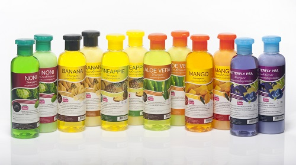

Натуральные фруктовые шампуни из Тайланда
Увлажняет кожу головы, стимулирует регенерацию клеток кожи головы, за счет чего укрепляет волосы.
Придает волосам здоровый и естественный блеск, стимулирует рост волос, борется с ломкостью и сухими кончиками, облегчает расчесывание.
Назначение: Жирные волосы, сеченые кончики, ломкие, лишенные природного блеска и сияния волосы. Ломкие, слабые и выпадающие волосы.
Часто окрашенные и пересушенные феном и подвергающиеся термическому воздействию волосы.
Шампунь: Нанесите на влажные волосы, равномерно распределите по всей длине волос, помассируйте до образования пены. Тщательно смойте.
Кондиционер: Нанесите на влажные волосы, равномерно распределите по всей длине волос, помассируйте. Тщательно смойте.
| Область применения | Волосы |
| Срок годности: | 3 года с даты изготовления |
| Условия хранения | Хранить в сухом месте. Температура воздуха в помещении не должна превышать 25° C |
| Упаковка средства | Два пластиковых флакона с откидывающейся крышкой, объемом 360 мл каждый |